1.5 数组向量
把三维几何向量推广为任意维数组，掌握分量运算与基本向量。
进度0%
掌握 0 / 6§1.5.1
数组向量的定义
向量 / 数组向量
设\(\mathbb F\)为数域, \(n\)为正整数.
记法:
\[
{\textcolor[rgb]{0,0,1}{\text{行向量:\ }}} \vec{a} = (a_1,\cdots,a_n)\in \mathbb F^n \qquad {\textcolor[rgb]{0,0,1}{\text{列向量:\ }}} \vec{a}=\left(\begin{array}{c}a_1\\a_2\\\vdots\\a_n\\\end{array}\right)\in \mathbb F^n
\]
这页感觉如何？
§1.5.2
高维数组的例子
向量 / 数组向量
例子1:时空向量(四维)
-
相对论中,事件由时间和空间位置确定:\((t,x,y,z)\)
-
这是一个四维向量!
例子2:颜色向量(三维或四维)
-
RGB颜色模型:\((R,G,B)\) (红、绿、蓝三个分量)
-
RGBA颜色模型:\((R,G,B,A)\) (增加透明度分量)
例子3:学生成绩向量(n维)
-
一个学生的成绩可以表示为:\((\text{数学},\text{物理},\text{化学},\text{英语},\cdots)\)
-
如果有\(n\)门课,就是一个\(n\)维向量!
向量的维数 = 描述对象所需的独立参数个数 = 自由度
这页感觉如何？
§1.5.3
特征向量与应用
向量 / 数组向量
高维向量在现代科学和工程中无处不在!
这页感觉如何？
§1.5.4
数组向量的线性运算
向量 / 数组向量
设 \(\vec{a}=(a_1,\cdots,a_n)\in \mathbb F^n\), \(\vec{b}=(b_1,\cdots,b_n)\in \mathbb F^n\), \(\lambda\in \mathbb F\).
-
加法: \(\vec{a}+\vec{b}:=(a_1+b_1,a_2+b_2,\cdots,a_n+b_n)\).
-
数乘: \(\lambda \vec{a}:=(\lambda a_1,\lambda a_2,\cdots,\lambda a_n)\).
-
零向量: \(\vec{0}:=(0,\cdots,0)\).
-
负向量: \(-\vec{a}:=(-a_1,\cdots,-a_n)\).
-
相等: \(\vec{a}=\vec{b} \iff a_i=b_i \quad i=1,\cdots,n\).
八条基本性质:
-
加法交换律: \(\vec{a}+\vec{b}=\vec{b}+\vec{a}\);
-
加法结合律: \(\vec{a}+(\vec{b}+\vec{c})=(\vec{a}+\vec{b})+\vec{c}\);
-
存在零元: \(\vec{a}+\vec{0}=\vec{a}=\vec{0}+\vec{a}\);
-
存在负元: \(\vec{a}+(-\vec{a})=\vec{0}=(-\vec{a})+\vec{a}\);
-
数乘单位元: \(1\vec{a} = \vec{a}\);
-
数乘结合律: \(\lambda(\mu \vec{a})=(\lambda \mu)\vec{a}\);
-
左分配律: \((\lambda+\mu)\vec{a}=\lambda \vec{a} + \mu \vec{a}\);
-
右分配律: \(\lambda (\vec{a}+\vec{b}) =\lambda \vec{a} + \lambda \vec{b}\);
这页感觉如何？
§1.5.5
数组向量的线性相关性与基本向量
向量 / 数组向量
设\(\vec{a}_1,\vec{a}_2,\cdots,\vec{a}_m\in \mathbb F^n\), \(\lambda_1,\lambda_2,\cdots,\lambda_m\in \mathbb F\).
\(\lambda_1\vec{a}_1 + \lambda_2\vec{a}_2 + \cdots + \lambda_m\vec{a}_m\) \(\longleftarrow\) 线性组合
这页感觉如何？
§1.5.6
本章概念图
向量 / 数组向量

这页感觉如何？